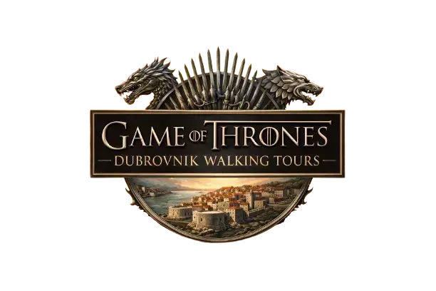
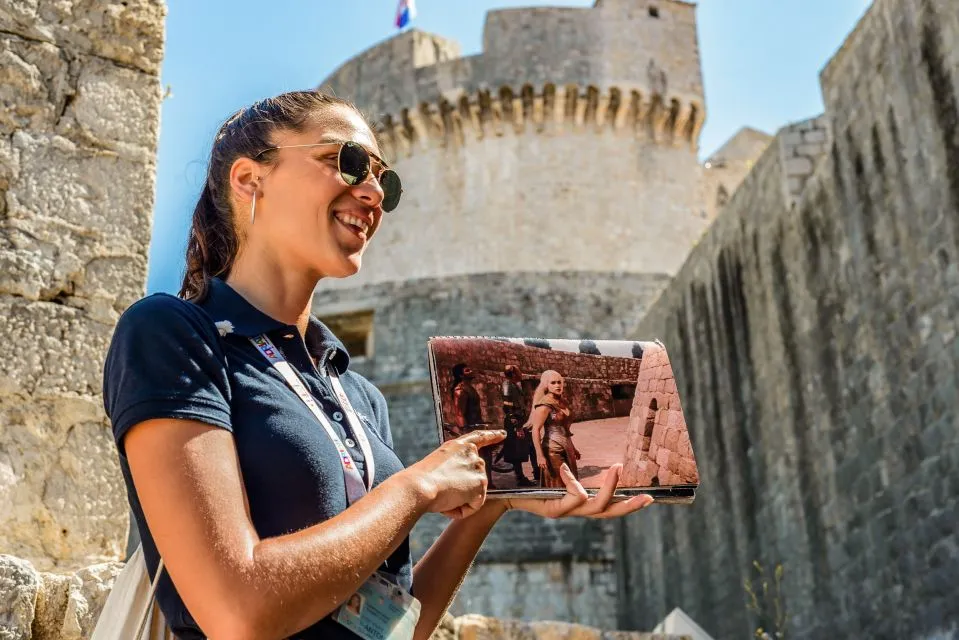
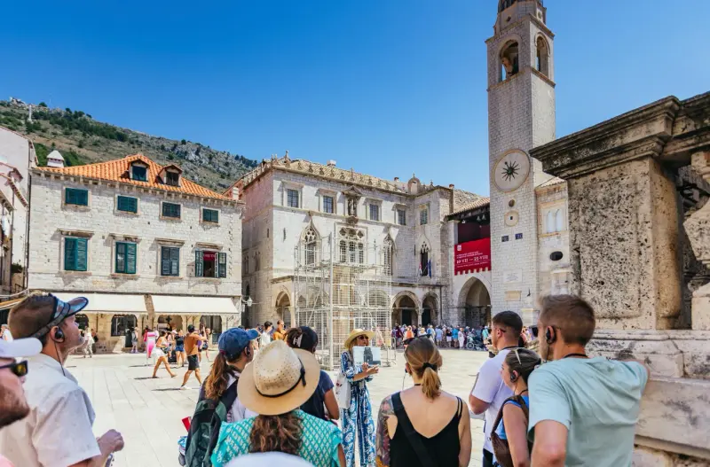
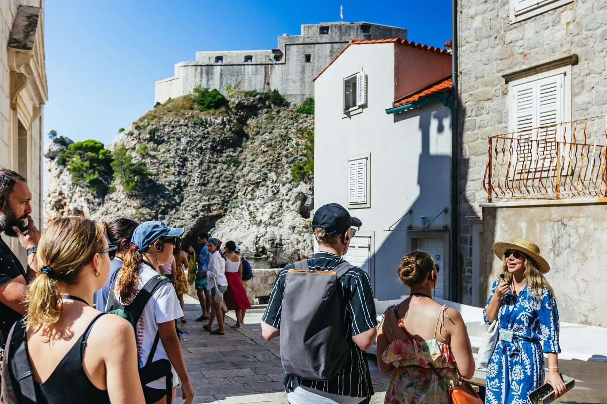
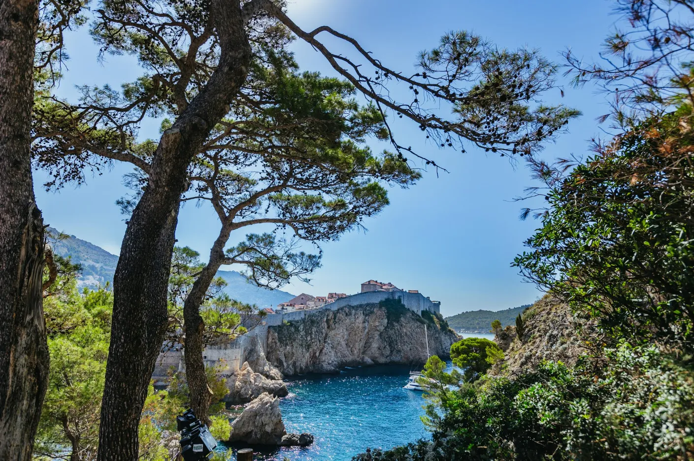
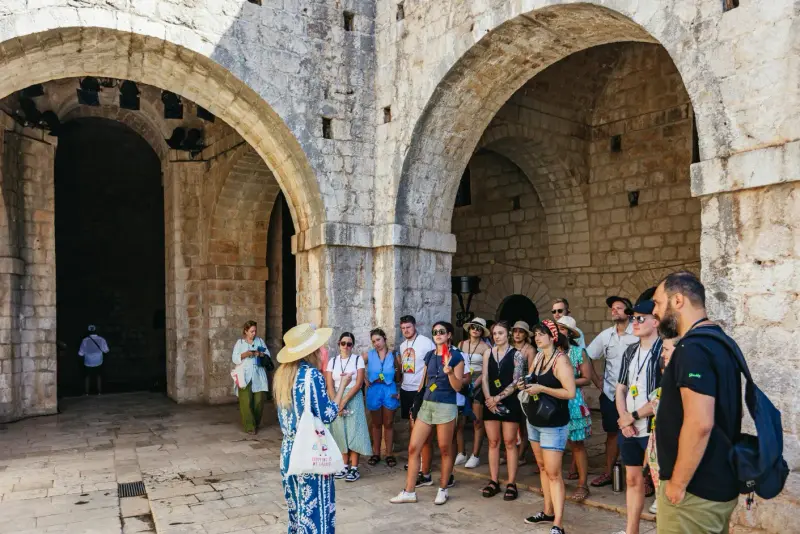
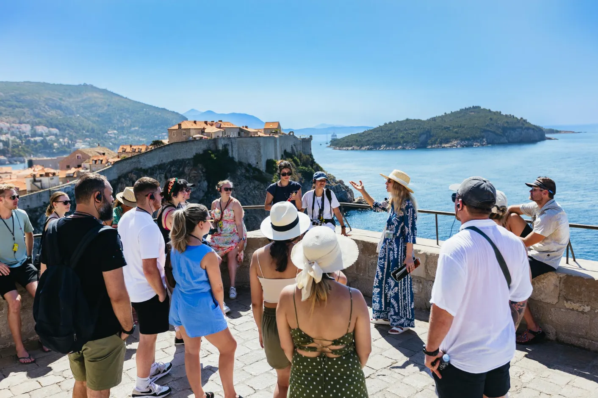
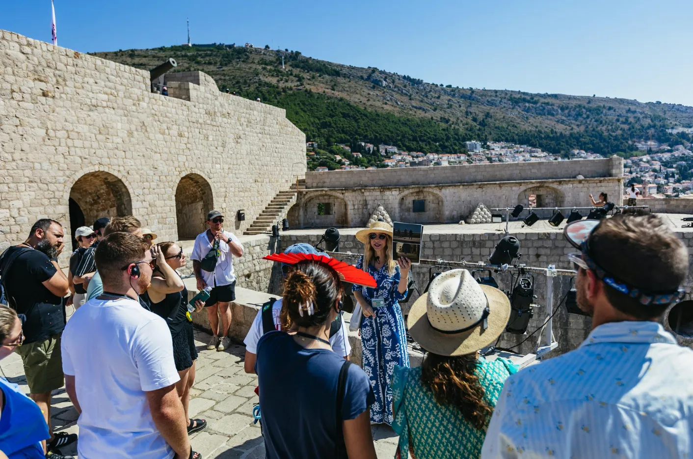
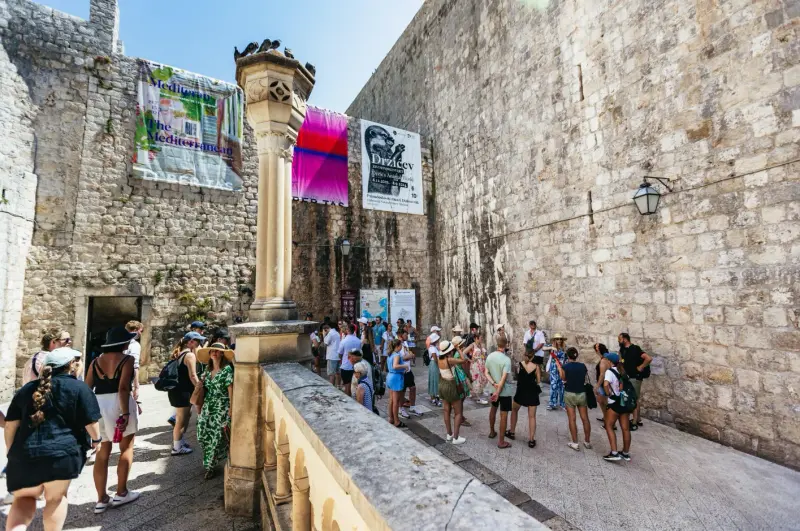

Filming Locations
GoT Filming Locations in Dubrovnik Old Town
Dubrovnik was the primary filming location for King's Landing. Here are some of the legendary spots on our tours.



Explore the real King's Landing filming locations with expert local guides. Walk through Dubrovnik's Old Town, visit the Red Keep, the Walk of Shame, and sail to Lokrum Island — the real Qarth.
From intimate walking tours to epic full-day experiences, we have the perfect tour for every fan of the realm.
Walk through the streets of King's Landing with a local guide who knows every filming spot, every scene, and every story behind the show. Two hours of Dubrovnik's Old Town like you've never seen it.
Everything from our Game of Thrones walking tour, plus a boat ride to Lokrum Island — the real-life Qarth. Sit on the Iron Throne, explore the botanical garden, and see where they filmed some of the show's most memorable scenes. Three hours, one unforgettable day.
Half Game of Thrones, half real Dubrovnik history — the story of the Republic of Ragusa is just as dramatic as anything in Westeros. Perfect if you want the filming locations and the true stories behind the city walls, all in 90 minutes.
Dubrovnik was the primary filming location for King's Landing. Here are some of the legendary spots on our tours.
A glimpse into the experience that awaits you.









.webp)


Real reviews from real travellers — straight from TripAdvisor, Google and GetYourGuide.
Excellent guided tour. Recommended.
"Ivica was a brilliant, informative guide. Lots of excellent history. Very knowledgeable and friendly. Ask him any questions regarding Dubrovnik or Game of Thrones. He will be able to answer. Clearly, he loves his job. Recommended."
The highlight of our visit to Dubrovnik
"An amazing tour with a knowledgeable guide who brought everything to life, with great facts about Game of Thrones and about Dubrovnik's history."
Absolutely wonderful!
"absolutely wonderful! the guide Ivac (i hope i've spell his name in the correct way) is very knowledgeable. Not only did he tell me behind-the-scenes stories of Game of Thrones, but he also gave me a crash course on the history of Dubrovnik"
Experience beyond my expectations
"The guide is engaging and is passionate about his job. He patiently answered our questions. The experience is beyond my expectations."
Excellent Tour!!
"This tour was brilliant! We visited the old town in off season, so were given a private tour by Jelena. She was fantastic and showed us all of the filming locations for Game of Thrones. This was by far the best way to see the town and Jelena also recommended some other trips and places for us to visit! Highly recommend!!"
Fantastic GoT tour in Old Town Dubrovnik!
"The Game of Thrones tour in Old Town Dubrovnik was fantastic! It was very interesting, full of great insights, and really well structured. Our guide, Jelena, was great, clear, engaging, and fun throughout the tour. Highly recommend it to any GoT fan or anyone wanting to learn more about Dubrovnik's history and filming locations!"
Excellent 90 min. GOT walking tour!
"We overslept because of USA jet-lag to Croatia so we missed our appointment time, but the tour manager was understanding and found a guide to take us 2 hours later. Mara was our tour guide and she was excellent. She was friendly and very knowledgeable about Dubrovnik history and also about the Game of Thrones production here. I highly recommend this tour."
Great tour to visit all the key spots in the old city and GoT locations
"This was the highlight of my stay. I missed my flight and reached one day later, but the operator accommodated me on the next day without any charge. Our tour guide explained a lot of details and inside stories. We went to see important spots in the city which were also spots of shooting of GoT. I would highly recommend this tour."
Amazing guide, only to recommend
"Eddie was an amazing guide, took us to all the great places we wanted to see and even the ones we didn't know were shooting places too, amazing stuff and very funny guide too! Only to recommend"
Not at all! While fans of the show will get the most out of the GoT references, our tours also cover the incredible real history of Dubrovnik. It's a great experience for everyone.
The tour involves moderate walking through the Old Town, including some stairs and uneven surfaces. We recommend comfortable shoes. The pace is relaxed with plenty of stops. If you have mobility concerns, please contact us in advance.
All tours include a licensed English-speaking guide, an A4 printed book with show scenes for comparison at each filming location, and audio devices (the guide speaks into a microphone and each guest receives a receiver so you can hear clearly even in busy areas).
Our group tours are conducted in English only. Tours in other languages (Croatian, German, Spanish, Italian, etc.) are available as a private tour option. Please contact us for private tour inquiries and pricing.
Free cancellation up to 24 hours before tour start. Cancellations within 24 hours receive a 50% refund. No-shows are non-refundable. In case of severe weather, we will reschedule at no extra cost.
All tours meet at Large Onofrio's Fountain — inside the Old Town. Just show up 10 minutes before the tour and look for the red umbrella.
Have a question about our tours or want to arrange something special? Send us a message and we'll get back to you as soon as possible.